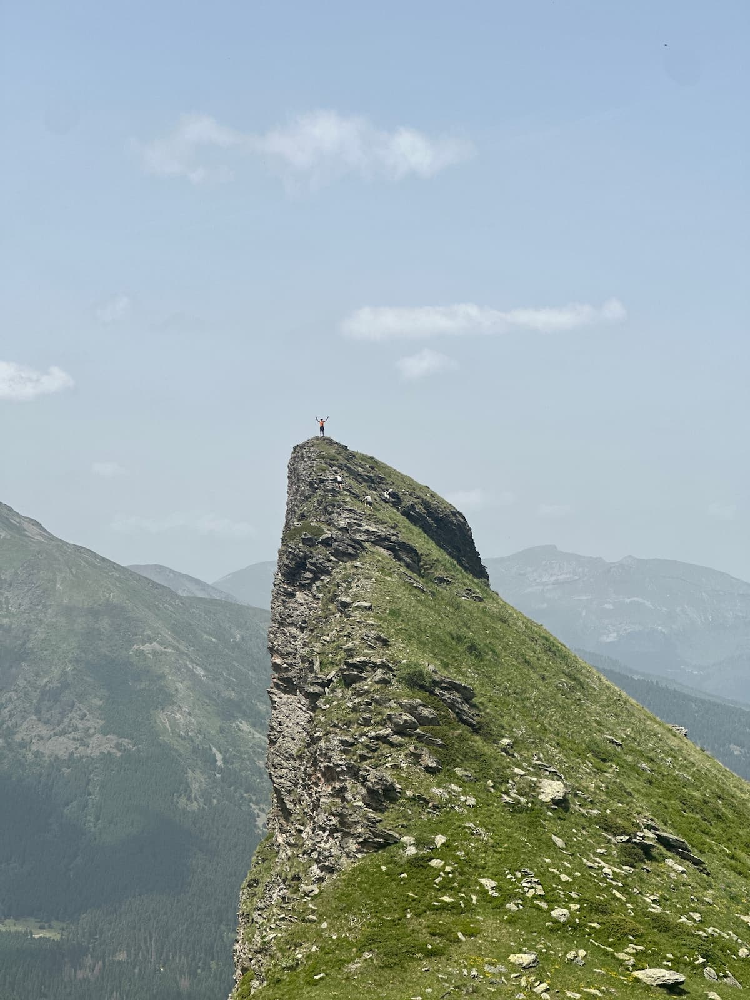

How to survive the Peaks of the Balkans
The "moderate" fitness requirement is accurate, but the you'll have a better time if you're fitter. We had plenty of "moderately" fit people in our group (myself included) who finished and had a great time doing it. However, it's also true that the fitter people in the group had a ... I don't want to say better, but they had an easier time and got to do more things. For example, there were side trips that some of us opted out of because we were tired and our feet were sore.
Bring extra snacks for yourself and to share. There's no shortage of food for breakfast and dinner, but lunch is usually pretty basic and doesn't include stuff to snack on during the day. We brought a couple of bags of Haribos and saved them for emergencies. We wish we brought more! It wouldn't be essential, and wasn't missed on the days where there were bars (see other tip), but on the days where there weren't any bars it would have been nice to have an extra something to snack on throughout the day to keep the blood sugar levels (and morale) up.
Try really fucking hard not to get gastro. You're probably going to get gastro anyway, and you'll probably become sick at Doberdol. By the end of the trip over half of the group had been sick (6 out of 11). Four of us got sick on the fourth day, and two more got sick the next day despite being incredibly careful about not getting sick. The day I got sick was one of the toughest days of my life because we had no option but to walk 16km along and 1km up to a bar where we could catch a ride to the next guesthouse.
Since you're probably going to get gastro, bring stuff that will make you less miserable. Anti-nausea and anti-diarrhea meds, electrolyte powders, wet wipe